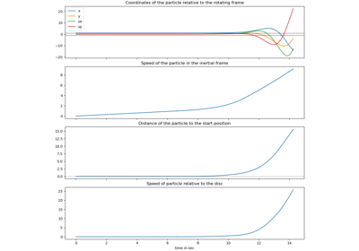
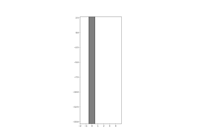
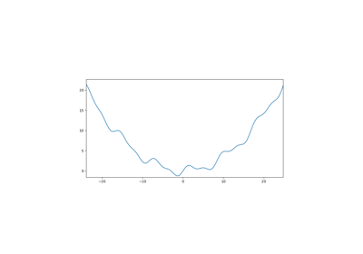

See the Examples¶


Heat Diffusion Process with Inequality (betts_10_57)
Heat Diffusion Process with Inequality (betts_10_57)


Parameter Identification with Non-Contiguous Measurements.
Parameter Identification with Non-Contiguous Measurements.

Time Delay Estimation

Block Sliding on a Spinning Disc
Block Sliding on a Spinning Disc
Example Using symjit


Rotating T-handle
Particle Through Gates
Car hits Points

Two Body Skateboard
Synchronisation of Clocks


Wood Pecker

Closed Chain

Spacecraft with Nutation Damper
Spacecraft with Nutation Damper


3D Drone with Propellers


Spoked, Rimless Wheel
Ball bouncing between two planes
Ball bouncing between two planes
Explorer Anomaly
Bouncing Ellipse
Colliding Discs
Two Balls Rolling on an Uneven Street
Two Balls Rolling on an Uneven Street
Colliding Ellipses
Two Ellipses Bouncing on a Wavy Street
Two Ellipses Bouncing on a Wavy Street